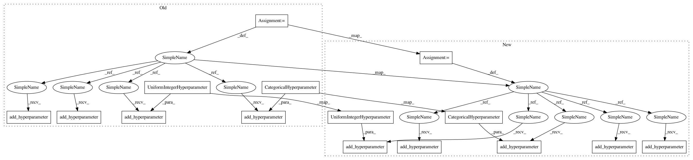

3f0ac49bf76bf3ee690f6209248e65316fde9999,ParamSklearn/components/regression/random_forest.py,RandomForest,get_hyperparameter_search_space,#Any#,118
Before Change
max_depth = UnParametrizedHyperparameter("max_depth", "None")
min_samples_split = UniformIntegerHyperparameter(
name="min_samples_split", lower=2, upper=20, default=2, log=False)
min_samples_leaf = UniformIntegerHyperparameter(
name="min_samples_leaf", lower=1, upper=20, default=1, log=False)
bootstrap = CategoricalHyperparameter(
name="bootstrap", choices=["True", "False"], default="True")
cs = ConfigurationSpace()
cs.add_hyperparameter(n_estimators)
cs.add_hyperparameter(max_features)
cs.add_hyperparameter(max_depth)
cs.add_hyperparameter(min_samples_split)
cs.add_hyperparameter(min_samples_leaf)
cs.add_hyperparameter(bootstrap)
cs.add_hyperparameter(criterion)
return cs
After Change
@staticmethod
def get_hyperparameter_search_space(dataset_properties=None):
cs = ConfigurationSpace()
cs.add_hyperparameter(Constant("n_estimators", 100))
cs.add_hyperparameter(Constant("criterion", "mse"))
cs.add_hyperparameter(UniformFloatHyperparameter(
"max_features", 0.5, 5, default=1))
cs.add_hyperparameter(UnParametrizedHyperparameter("max_depth", "None"))
cs.add_hyperparameter(UniformIntegerHyperparameter(
"min_samples_split", 2, 20, default=2))
cs.add_hyperparameter(UniformIntegerHyperparameter(
"min_samples_leaf", 1, 20, default=1))
cs.add_hyperparameter(
UnParametrizedHyperparameter("min_weight_fraction_leaf", 0.))
cs.add_hyperparameter(UnParametrizedHyperparameter("max_leaf_nodes", "None"))
cs.add_hyperparameter(CategoricalHyperparameter(
"bootstrap", ["True", "False"], default="True"))
return cs
In pattern: SUPERPATTERN
Frequency: 4
Non-data size: 15
Instances
Project Name: automl/auto-sklearn
Commit Name: 3f0ac49bf76bf3ee690f6209248e65316fde9999
Time: 2015-10-01
Author: feurerm@informatik.uni-freiburg.de
File Name: ParamSklearn/components/regression/random_forest.py
Class Name: RandomForest
Method Name: get_hyperparameter_search_space
Project Name: automl/auto-sklearn
Commit Name: 03cc78a8beb1f3e8b2bd29c9ba5063ba81955336
Time: 2015-10-01
Author: feurerm@informatik.uni-freiburg.de
File Name: ParamSklearn/components/classification/sgd.py
Class Name: SGD
Method Name: get_hyperparameter_search_space
Project Name: automl/auto-sklearn
Commit Name: 53da02f8d5923d32f3c11a28b0e11f64d905399d
Time: 2015-10-01
Author: feurerm@informatik.uni-freiburg.de
File Name: ParamSklearn/components/regression/gradient_boosting.py
Class Name: GradientBoosting
Method Name: get_hyperparameter_search_space
Project Name: automl/auto-sklearn
Commit Name: 9caf652d8aa1fefb8531b5ccc339aceef520c305
Time: 2015-10-01
Author: feurerm@informatik.uni-freiburg.de
File Name: ParamSklearn/components/classification/extra_trees.py
Class Name: ExtraTreesClassifier
Method Name: get_hyperparameter_search_space